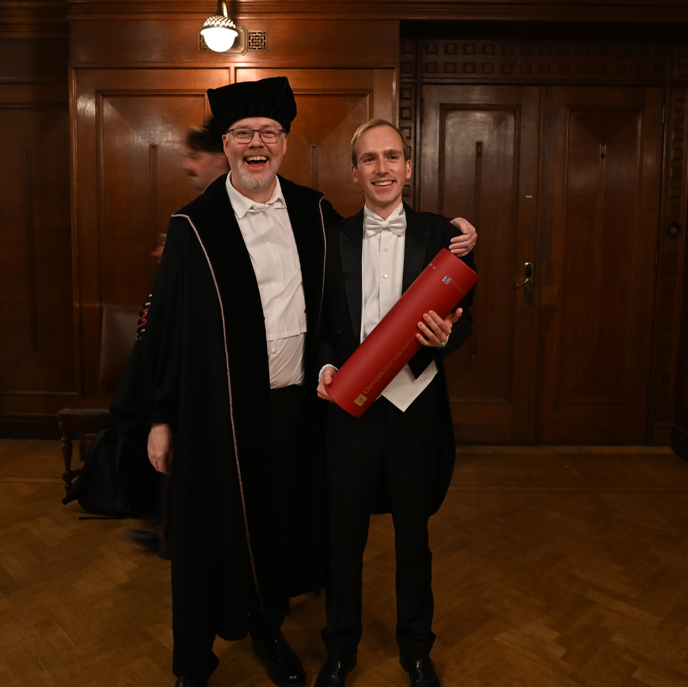

Home
My name is Niek Bollemeijer and I have recently defended my PhD thesis, titled `New spectral-timing techniques across the full X-ray band: revealing the dynamic corona in black hole X-ray binaries', at the University of Amsterdam, supervised by Dr. Phil Uttley. My research is focused on the variability in the X-ray flux that is observed from accreting black holes, which will be explained in more detail on this website.
 With my PhD advisor Phil Uttley after my defence on 26 November 2025 (Photo:Arkadip Basak)This website is still work in progress.
Research
Sed tempus urna et pharetra pharetra massa massa ultricies. Porttitor rhoncus dolor purus non enim praesent. Id aliquet risus feugiat in ante metus dictum.
Contact
If you have any questions, feel free to send me an email.